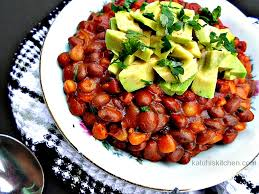

Popular Kenyan Recipes
Discover authentic tastes from the heart of Kenya

Nyama Choma
Traditional Kenyan roasted meat, usually goat or beef, served with kachumbari
45 mins
328
Ugali na Nyama
Classic Kenyan cornmeal dish served with tender beef stew and vegetables
45 mins
425

Mukimo
Mashed potatoes with peas, pumpkin leaves, and green maize
40 mins
186

Kenyan Samosas
Crispy triangular pastries filled with spiced minced meat or vegetables
60 mins
312

Githeri
A nutritious mix of boiled maize and beans, seasoned to perfection
90 mins
164
Kenyan Chapati
Soft and layered flatbread, perfect with any curry or stew
30 mins
292

Kenyan Pilau
Aromatic rice cooked with spices, meat, and caramelized onions
60 mins
245

Kenyan Mandazi
Sweet, fluffy East African doughnuts flavored with cardamom and coconut milk
45 mins
275